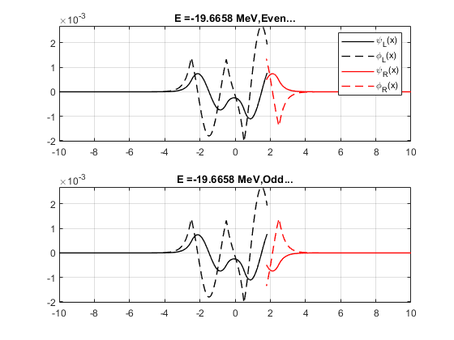

Contents
Problem 1(i)
Four eigen energies and wavefunctions.
clc clear V0=-320E6; dx=0.02; a=2; b=1; [Enew1]=secant_d_well_solve(0.09*V0,0.11*V0,V0,-5*a,5*a,0.9*a,a,b,dx); % use help ... for detail subplot(2,1,1);grid on;subplot(2,1,2);grid on; [Enew2]=secant_d_well_solve(0.14*V0,0.16*V0,V0,-5*a,5*a,0.9*a,a,b,dx); subplot(2,1,1);grid on;subplot(2,1,2);grid on; [Enew3]=secant_d_well_solve(0.59*V0,0.61*V0,V0,-5*a,5*a,0.9*a,a,b,dx); subplot(2,1,1);grid on;subplot(2,1,2);grid on; [Enew4]=secant_d_well_solve(0.89*V0,0.91*V0,V0,-5*a,5*a,0.9*a,a,b,dx); subplot(2,1,1);grid on;subplot(2,1,2);grid on; %To make estimation bit easier, I made some plots first... % for i=1:20 % plotwave(0.05*i*V0, V0,-5*a,5*a,0.9*a,a,b,dx) % end
Eigenvalue = -46.505643 (MeV), (fraction E/V0 = 0.145330), iter = 8.000000 Eigenvalue = -62.554912 (MeV), (fraction E/V0 = 0.195484), iter = 84.000000 Eigenvalue = -196.657610 (MeV), (fraction E/V0 = 0.614555), iter = 28.000000 Eigenvalue = -287.392460 (MeV), (fraction E/V0 = 0.898101), iter = 11.000000
Since secant method sometime does not converge to the solution quickly, I add one more condition to break the loop, that is abs(E1-E2)<Tol. That might explain why my energy is not exact. However, I tried using bisection method 'near' the result of my secant method, but it still does not find the solution within 500 iterations.
Problem 1(ii)
Effect on ground level energy of changing well depth.
clc clear dx=0.02; a=2; b=1; V0=-160E6; [Enew(1)]=secant_d_well_solve(0.81*V0,0.825*V0,V0,-5*a,5*a,0.9*a,a,b,dx); subplot(2,1,1);grid on;subplot(2,1,2);grid on; V0=-240E6; [Enew(2)]=secant_d_well_solve(0.85*V0,0.87*V0,V0,-5*a,5*a,0.9*a,a,b,dx); subplot(2,1,1);grid on;subplot(2,1,2);grid on; V0=-320E6; [Enew(3)]=secant_d_well_solve(0.89*V0,0.91*V0,V0,-5*a,5*a,0.9*a,a,b,dx); subplot(2,1,1);grid on;subplot(2,1,2);grid on; V0=-360E6; [Enew(4)]=secant_d_well_solve(0.89*V0,0.91*V0,V0,-5*a,5*a,0.9*a,a,b,dx); subplot(2,1,1);grid on;subplot(2,1,2);grid on; V0=-400E6; [Enew(5)]=secant_d_well_solve(0.9*V0,0.917*V0,V0,-5*a,5*a,0.9*a,a,b,dx); subplot(2,1,1);grid on;subplot(2,1,2);grid on; figure() plot([-160E6,-240E6,-320E6,-360E6,-400E6],Enew,'-o');grid on; title('Effect of changing depth'); xlabel('Depth of well (eV)');ylabel('Ground state energy level (eV)'); %plotwave(0.915*V0, V0,-5*a,5*a,0.9*a,a,b,dx)
Eigenvalue = -131.376776 (MeV), (fraction E/V0 = 0.821105), iter = 21.000000 Eigenvalue = -209.288321 (MeV), (fraction E/V0 = 0.872035), iter = 11.000000 Eigenvalue = -287.392460 (MeV), (fraction E/V0 = 0.898101), iter = 11.000000 Eigenvalue = -326.732116 (MeV), (fraction E/V0 = 0.907589), iter = 10.000000 Eigenvalue = -366.016236 (MeV), (fraction E/V0 = 0.915041), iter = 9.000000
As the well gets deep, the groud state energy also decreases. And their relationship is pretty linear based on the plot.
Problem 1(iii)
Effect on ground level energy of changing well width.
clc clear dx=0.02; a=2; V0=-320E6; b=0.8; [Enew(1)]=secant_d_well_solve(0.89*V0,0.91*V0,V0,-5*a,5*a,0.9*a,a,b,dx); subplot(2,1,1);grid on;subplot(2,1,2);grid on; b=0.6; [Enew(2)]=secant_d_well_solve(0.89*V0,0.91*V0,V0,-5*a,5*a,0.9*a,a,b,dx); subplot(2,1,1);grid on;subplot(2,1,2);grid on; b=0.4; [Enew(3)]=secant_d_well_solve(0.9*V0,0.91*V0,V0,-5*a,5*a,0.9*a,a,b,dx); subplot(2,1,1);grid on;subplot(2,1,2);grid on; b=0.2; [Enew(4)]=secant_d_well_solve(0.92*V0,0.93*V0,V0,-5*a,5*a,0.9*a,a,b,dx); subplot(2,1,1);grid on;subplot(2,1,2);grid on; b=0.1; [Enew(5)]=secant_d_well_solve(0.93*V0,0.94*V0,V0,-5*a,5*a,0.9*a,a,b,dx); subplot(2,1,1);grid on;subplot(2,1,2);grid on; figure() plot([0.8,0.6,0.4,0.2,0.1],Enew,'-o');grid on; title('Effect of changing width'); xlabel('Width of seperation (fm)');ylabel('Ground state energy level (eV)'); % plotwave(0.94*V0, V0,-5*a,5*a,0.9*a,a,b,dx)
Eigenvalue = -288.286149 (MeV), (fraction E/V0 = 0.900894), iter = 9.000000 Eigenvalue = -289.038229 (MeV), (fraction E/V0 = 0.903244), iter = 14.000000 Eigenvalue = -291.365914 (MeV), (fraction E/V0 = 0.910518), iter = 11.000000 Eigenvalue = -295.721773 (MeV), (fraction E/V0 = 0.924131), iter = 28.000000 Eigenvalue = -300.389544 (MeV), (fraction E/V0 = 0.938717), iter = 11.000000
As the width of seperation gets smaller, the groud state energy decrease. And as the width approaches to zero, the rate of change in energy also increases.